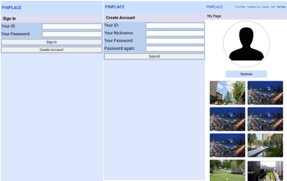
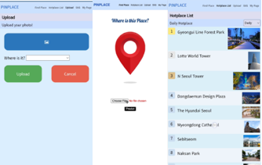
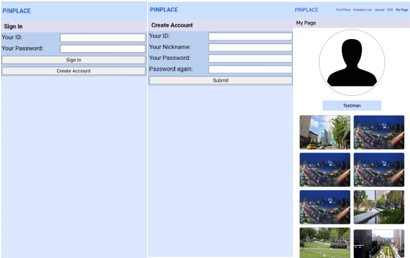
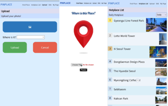

PinPlace
 



Project information
- Category: App
- Project date: 2021.09 - 2021.12
- Github: https://github.com/Outsider-H/PINPLACE
서비스 개요
사용자에게 이미지를 입력 받아 해당 장소를 알려주는 인공지능 웹 애플리케이션 서비스입니다. 최근 핸드폰의 사진 기능은 이미지 태그가 존재하여 장소를 확인할 수 있지만, 애플리케이션을 통해 촬영한 이미지나 타인이 촬영한 이미지에 대해서는 장소를 알 수 없기에 이러한 서비스를 개발하였습니다. 서울의 주요 핫플레이스 10곳을 선정하고 cnn 모델을 개발하여 데이터를 모아 학습을 진행하고 사용자가 올린 이미지에 대한 이미지가 어느 장소인지 알려주는 기능을 구현했습니다.
핵심 개발 사항
- python을 활용하여 google colab에서 GPU를 대여하여 학습
- selenium 라이브러리를 활용하여 총 10개의 클래스에 대하여 2500개의 이미지 데이터 크롤링
- keras 라이브러리를 활용하여 cnn 모델 구축 및 학습
- 공모전 우수상 수상
- Keras 라이브러리를 사용하여 수집한 데이터에 대하여 대하여 이미지 증폭을 실행하였습니다. selenium 라이브러리를 통해 구글에서 이미지를 크롤링하여 모은 데이터가 부족하다고 판단하여 해당 이미지에 대한 변형을 통해 데이터를 증폭하였습니다. keras를 통해 ImageDataGenerator를 통해 10개의 클래스에 대하여 각 1000장의 데이터를 확보했습니다.
- Keras 라이브러리를 통해 resnet50 모델을 가져와서 학습을 진행하고 해당 이미지에 대한 장소 인식을 테스트해보았을 때 인식이 잘 되지 않는 케이스를 찾기 위해 confusion matrix를 활용하였습니다. matplotlib를 통해 confusion matrix를 구현하였고, 잘못 예측을 한 케이스가 많은 데이터를 확인하고 해당 이미지 데이터를 확인하고 관련 없는 사진들을 수작업으로 제거하여 최종적으로 91.12% 의 정확도로 개선하였습니다.